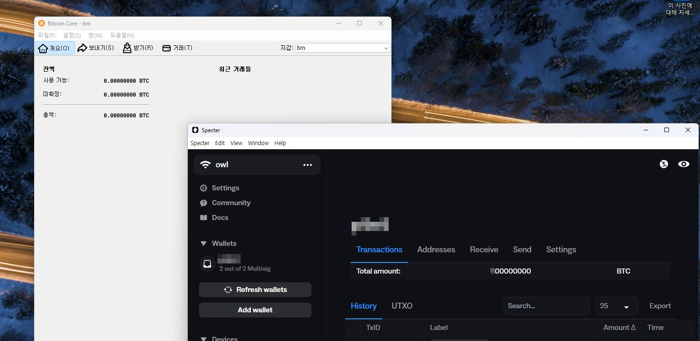

풀노드를 굴리는 이유는, 비트코인 생태계에 기여한다는 거창한 이유도 있지만, 정확히는 "내 돈을 내가 관리한다"는 의미가 더 강하다.
비트코인 노드에 코디네이터 앱(Specter, Sparrow, Nunchuk 같은 지갑 소프트웨어)을 직접 연결해야, 잔액과 거래 내역을 남의 서버가 아니라 내가 직접 검증할 수 있기 때문이다.
1. 그런 일이 정말 일어날까
콜드월렛 제작사와 와치온리 앱 제작사가 서로 짜고 치는 고스톱을 한다면? 그래서 모든 사용자를 솎아낸다면?
물론 그럴 리 없다고 생각한다. 가능성은 한없이 0%에 수렴하겠지.
0%에 수렴한다고 0%는 아니다 ㅋㅋㅋ
그 한없이 작은 확률 하나 때문에, 남의 서버를 거치지 않고 내 눈으로 직접 확인할 수 있는 구조를 만들어두는 거다.
2. 풀노드 + 스펙터 데스크탑, 간단히

과정만 간단히 정리하면 이렇다.
- 비트코인 코어(Bitcoin Core)를 설치하고 실행해서, 전체 블록체인을 내 컴퓨터에 직접 동기화한다. (용량도 크고 시간도 꽤 걸린다.)
- 설정 파일에서 RPC 서버 옵션을 켜서, 다른 지갑 앱이 내 노드에 접속해 질의할 수 있게 열어둔다.
- 스펙터 데스크탑(Specter Desktop)을 설치한다. 같은 컴퓨터에 비트코인 코어가 이미 돌고 있으면, 접속 정보를 알아서 잡아준다.
- 스펙터의 노드 설정에서 방금 띄운 비트코인 코어를 선택하면 끝. 이제부터 잔액 조회·주소 검증·거래 확인이 전부 내 노드를 거쳐서 이루어진다.
이렇게 해두면, 어떤 회사의 서버도 거치지 않고 내가 직접 원장을 들여다보는 셈이다. 확률이 0%든 0.0001%든, 적어도 그 판에 낄 일은 없다.